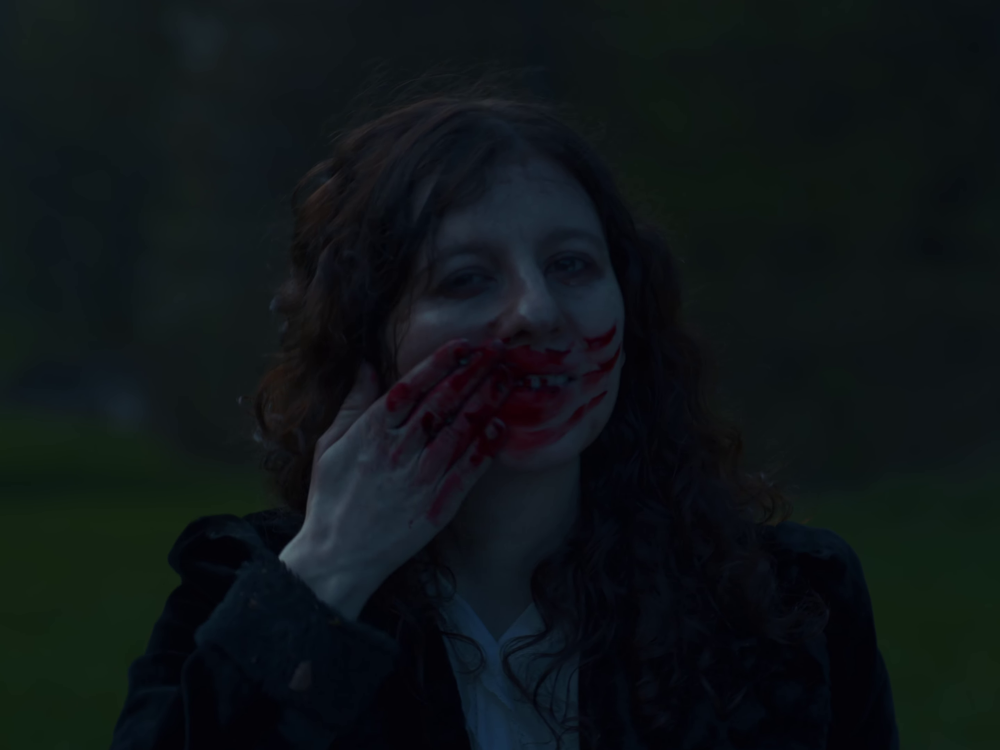
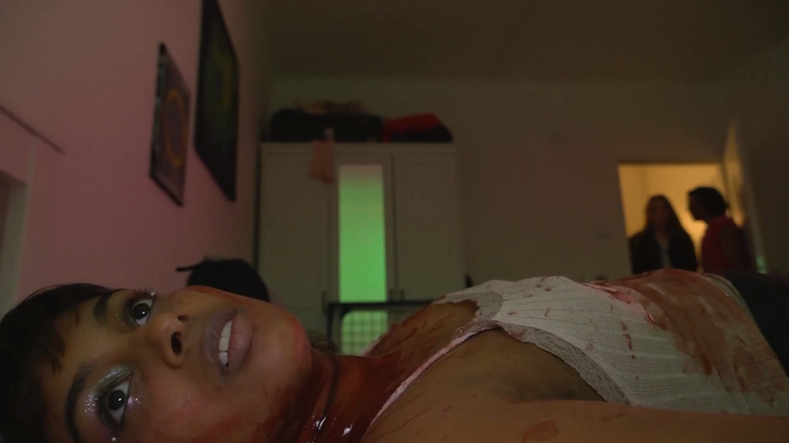
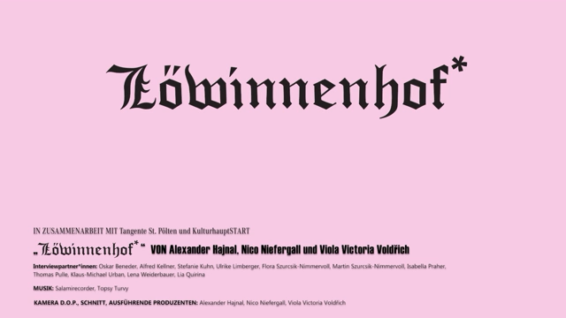
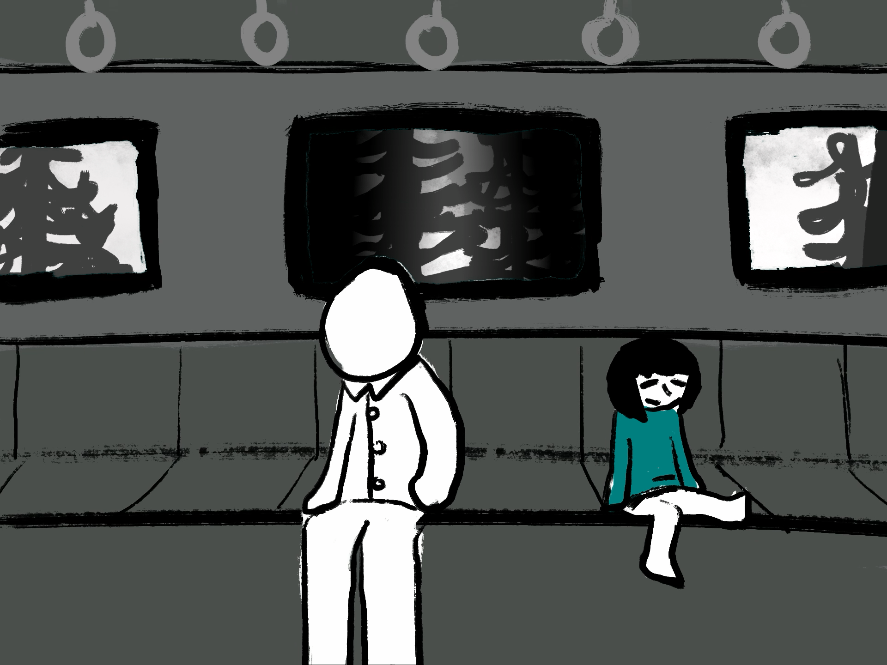
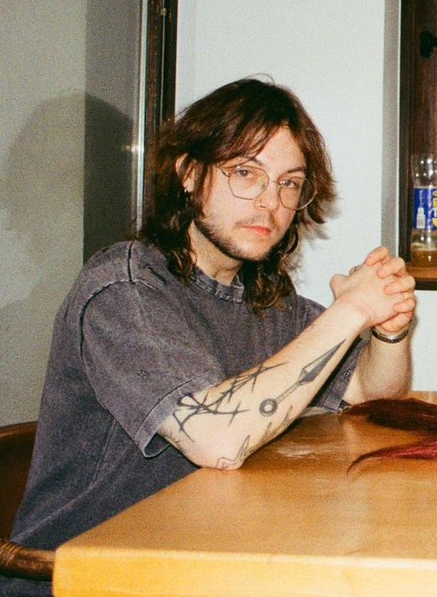
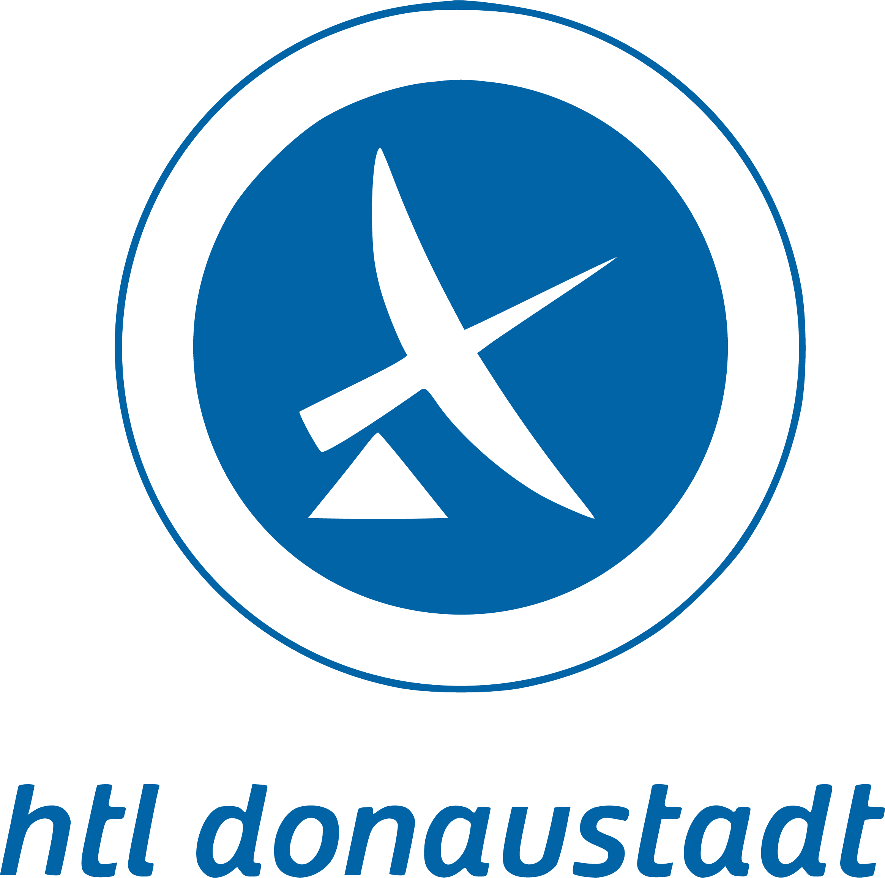
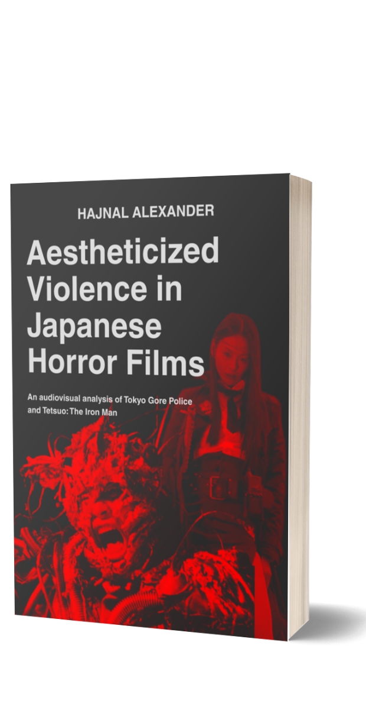
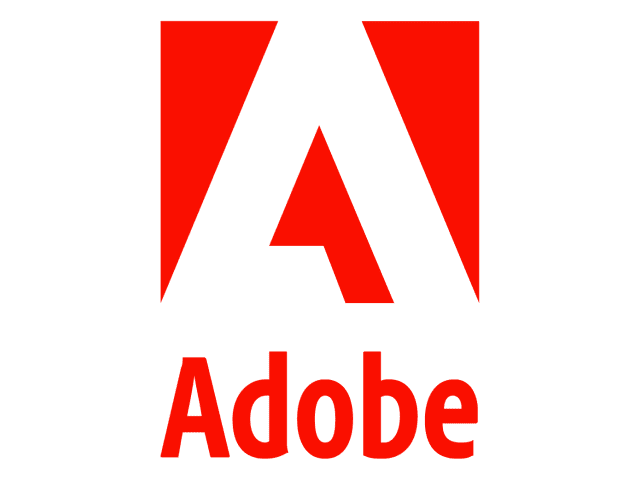
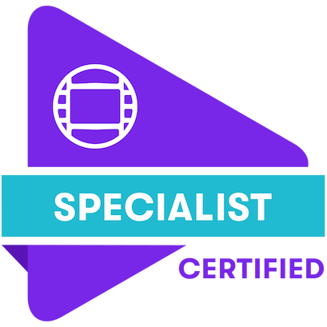
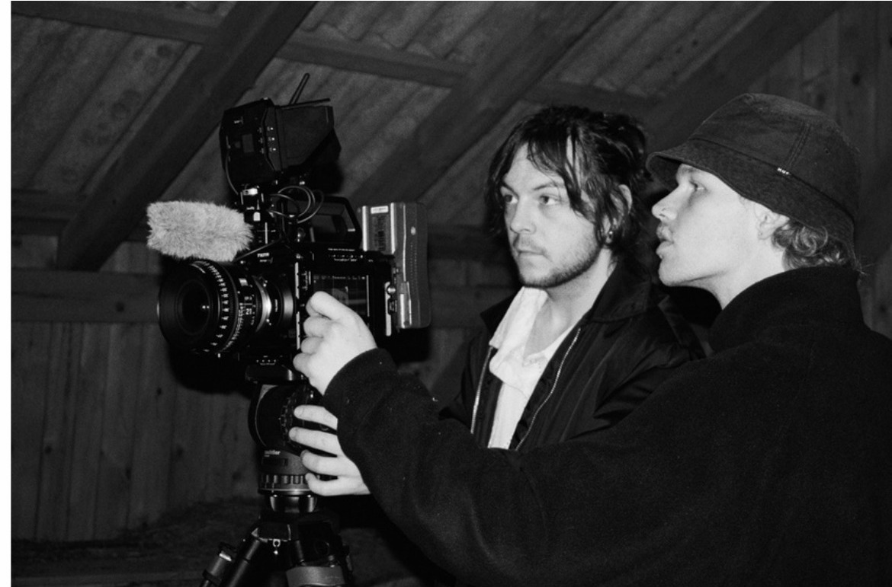

Projects

Poisonous Flowers (2024)

Löwinnenhof — Documentary Series (2024)

Tomorrow (2023)
VIDEO PROJECT 05
Upcoming Video Project
3D / Experiments

About Me
I’m a Vienna-based video producer and editor focused on editing, camera work and audiovisual experimentation. My work moves between film, event production and digital media, with a particular interest in rhythm, sound and unconventional visual aesthetics.

Background
Higher Education
BSc Media Technology
FH St. Pölten University of Applied Sciences · 2023–2026
Focus on audiovisual media production, post-production, camera technology, audio and interactive media.
Secondary Technical Education
Media Technology
HTL Donaustadt · High School Diploma, 2019
Technical education in media technology with a focus on audiovisual production and digital media.

Bachelor Thesis · In Progress, 2026
Aestheticized Violence in Japanese Horror Films
An audiovisual analysis of Tokyo Gore Police and Tetsuo: The Iron Man
Exploring how editing, sound design, practical effects and body imagery shape the aesthetics of violence in Japanese horror cinema.

Tools & Certifications
Edit
- Premiere Pro
- Avid Media Composer
- DaVinci Resolve
Motion / 3D
- After Effects
- Blender
- Autodesk Maya
- TouchDesigner
Camera / Production
- Mirrorless Camera Systems
- Lighting
- Gimbal
- On-Set Data Management
Audio
- Pro Tools
- Ableton Live
Certified


Kontakt
Alexander Hajnal · Vienna, Austria
